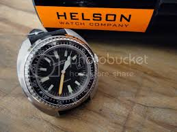

Qual a função da propriedade Orientation no @media do CSS?
resposta:Verificar se a tela está horizontal ou vertical
1º Título Libertadores 99 
2º Título Libertadores 2020
3º Título Libertadores 2021